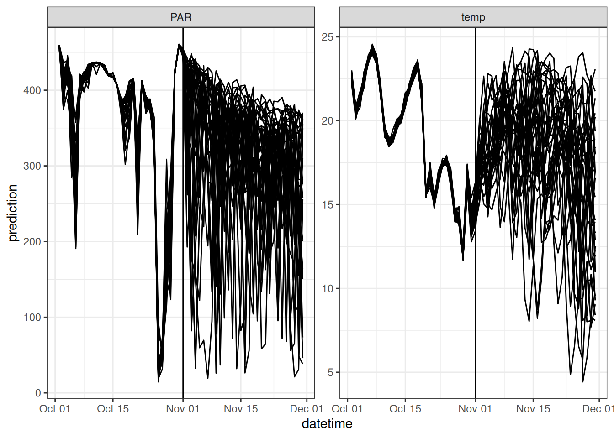
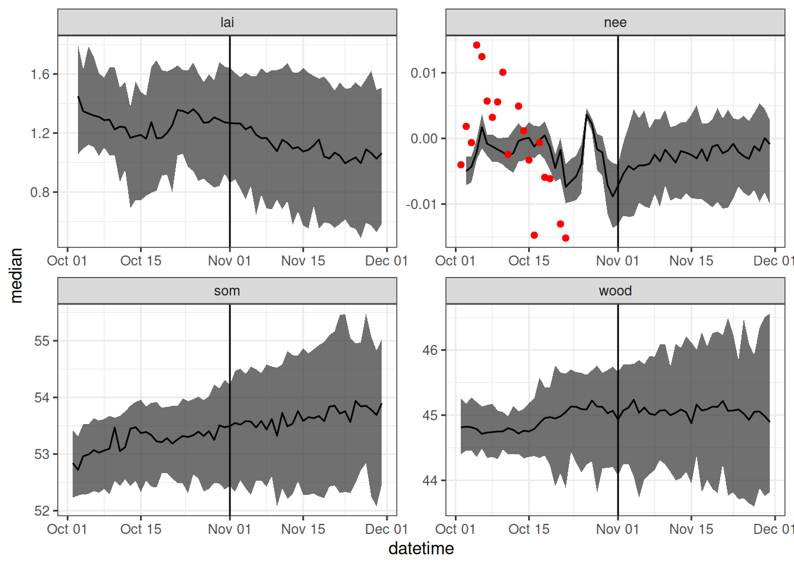

if(file.exists("data/PF_analysis_1.Rdata")){
load("data/PF_analysis_1.Rdata")
}else{
load("data/PF_analysis_0.Rdata")
}
ens_members <- dim(analysis$forecast)[2]21 Forecast - analysis cycle
21.1 Step 1: Set initial conditions and parameter distributions
We will start our forecast-analysis cycle by running the model with a particle filter over some time in the past. This is designed to spin up the model and set the initial states and parameters for a forecast.
Now we are going to generate a forecast that started from our last forecast that was saved. First, load the forecast into memory so that we can access the initial conditions and parameters in it.
21.2 Step 2: Get latest data
The latest observation data is available by running Chapter 18 and reading in the CSV. You will need to re-run the code in Chapter 18 if you want to update the observations outside the automatic build of this book.
obs <- read_csv("data/site_carbon_data.csv", show_col_types = FALSE)21.3 Step 3: Generate forecast
This example introduces the concept of a “look back”. This is stepping back in the past to restart the particle filter so that it can assimilate any data that has been made available since the last time that period was run through the particle filter. The look back is important because many observations have delays before becoming available (called latency). NEON flux data can have a 5-day to 1.5-month latency. MODIS LAI is an 8-day average so has an 8-day latency.
Here we use a look back of 30 days. Since our forecast horizon is 30 days in the future, the total days of the simulation are 30 + 30. Our reference_datetime is today.
site <- "OSBS"
look_back <- 30
horizon <- 30
reference_datetime <- Sys.Date()
sim_dates <- seq(reference_datetime - look_back, length.out = look_back + horizon, by = "1 day")Since yesterday’s forecast also had a 30-day look-back, we can find the first day of our simulation (30 days ago) in the last saved analysis and use this for initial conditions.
index <- which(analysis$sim_dates == sim_dates[1])The use of the look-back requires combining the “historical” weather and future weather into a single input data frame.
inputs_past <- get_historical_met(site = site, sim_dates[1:(look_back-2)], use_mean = FALSE)
inputs_future <- get_forecast_met(site = site, sim_dates[(look_back-1):length(sim_dates)], use_mean = FALSE)
inputs <- bind_rows(inputs_past, inputs_future)
inputs_ensemble <- assign_met_ensembles(inputs, ens_members)The combined weather drivers with the concept of the look back are shown in the figure below. The vertical line is where the look-back period transitions to the future.

The object with yesterday’s forecast also has the parameter values. Load the fixed parameter values and initialize the parameters that are being fit by the particle filter with the values from the analysis.
params <- analysis$params
num_pars <- 2
fit_params <- array(NA, dim = c(length(sim_dates) ,ens_members , num_pars))
fit_params[1, , 1] <- analysis$fit_params[index, ,1]
fit_params[1, , 2] <- analysis$fit_params[index, ,2]Initialize the states with the states from the analysis that occurred on the index simulation date in the previous run through the particle filter.
#Set initial conditions
forecast <- array(NA, dim = c(length(sim_dates), ens_members, 12)) #12 is the number of outputs
forecast[1, , 1] <- analysis$forecast[index, ,1]
forecast[1, , 2] <- analysis$forecast[index, ,2]
forecast[1, , 3] <- analysis$forecast[index, ,3]
wt <- array(1, dim = c(length(sim_dates), ens_members))
wt[1, ] <- analysis$wt[index, ]Run the particle filter (over the look-back days) that transitions to a forecast (which is the same as the particle filter without data)
for(t in 2:length(sim_dates)){
fit_params[t, , 1] <- rnorm(ens_members, fit_params[t-1, ,1], sd = 0.0005)
fit_params[t, , 2] <- rnorm(ens_members, fit_params[t-1, ,2], sd = 0.00005)
params$alpha <- fit_params[t, , 1]
params$Rbasal <- fit_params[t, , 2]
if(t > 1){
forecast[t, , ] <- forest_model(t,
states = matrix(forecast[t-1 , , 1:3], nrow = ens_members) ,
parms = params,
inputs = matrix(inputs_ensemble[t , , ], nrow = ens_members))
}
analysis <- particle_filter(t, forecast, obs, sim_dates, wt, fit_params,
variables = c("lai", "wood", "som", "nee"),
sds = c(0.1, 1, 20, 0.005))
forecast <- analysis$forecast
fit_params <- analysis$fit_params
wt <- analysis$wt
}21.4 Step 4: Save forecast and data assimilation output
Convert forecast to a dataframe.
output_df <- output_to_df(forecast, sim_dates, sim_name = "simple_forest_model")forecast_weighted <- array(NA, dim = c(length(sim_dates), ens_members, 12))
params_weighted <- array(NA, dim = c(length(sim_dates) ,ens_members , num_pars))
for(t in 1:length(sim_dates)){
wt_norm <- wt[t, ]/sum(wt[t, ])
resample_index <- sample(1:ens_members, ens_members, replace = TRUE, prob = wt_norm )
forecast_weighted[t, , ] <- forecast[t, resample_index, 1:12]
params_weighted[t, , ] <- fit_params[t,resample_index, ]
}
output_df <- output_to_df(forecast_weighted, sim_dates, sim_name = "simple_forest_model")
parameter_df <- parameters_to_df(params_weighted, sim_dates, sim_name = "simple_forest_model", param_names = c("alpha","Rbasal"))Figure 21.1 is a visualization of the forecast. The vertical line is where the look-back period transitions to the future.

Save the states and weights for use as initial conditions in the next forecast.
analysis$params <- params
save(analysis, file = "data/PF_analysis_1.Rdata")Convert to the format and units required by the NEON Ecological Forecasting Challenge
efi_output <- output_df |>
mutate(datetime = as_datetime(datetime),
model_id = "bookcast_forest",
duration = "P1D",
project_id = "neon4cast",
site_id = site,
family = "ensemble",
reference_datetime = as_datetime(reference_datetime)) |>
rename(parameter = ensemble) |>
filter(datetime >= reference_datetime) |>
filter(variable == "nee") |>
mutate(prediction = prediction / 0.01) #Convert from MgC/ha/Day to gC/m2/dayWrite the forecast to a CSV file
file_name <- paste0("data/terrestrial_daily-", reference_datetime, "-bookcast_forest.csv")
write_csv(efi_output, file_name)and submit to the Challenge. The submission uses the submit function in the neon4cast package(remotes::install_github("eco4cast/neon4cast"))
neon4cast::submit(file_name, ask = FALSE)validating that file matches required standarddata/terrestrial_daily-2025-03-10-bookcast_forest.csv✔ file has model_id column
✔ forecasted variables found correct variable + prediction column
✔ nee is a valid variable name
✔ file has correct family and parameter columns
✔ file has site_id column
✔ file has datetime column
✔ file has correct datetime column
✔ file has correct duration column
✔ file has project_id column
✔ file has reference_datetime column
Forecast format is valid
Thank you for submitting!21.5 Step 5: Repeat Steps 2 - 4
Wait for a day to pass and then use yesterday’s analysis today for initial conditions and parameter distributions. This particular forecast uses GitHub actions to automatically render the book each day and rendering this chapter results in generating, saving, and submitting the latest forecast.
load("data/PF_analysis_1.Rdata")21.6 Additional example
I recommend looking at a tutorial created by Mike Dietze that has many of the particle filter concepts used here. It is a similar process model that runs at the 30-minute time-step. The tutorial is more advanced in its use of priors on the parameters and shows how to forecast across multiple sites.